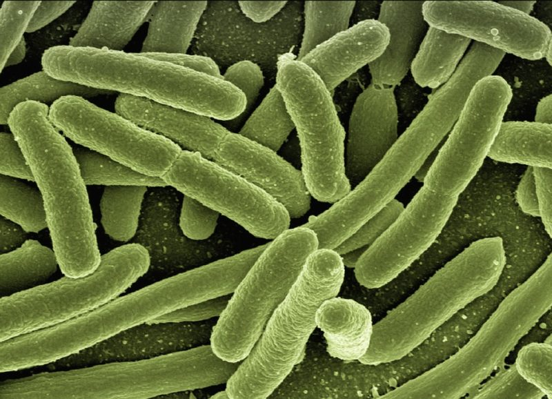
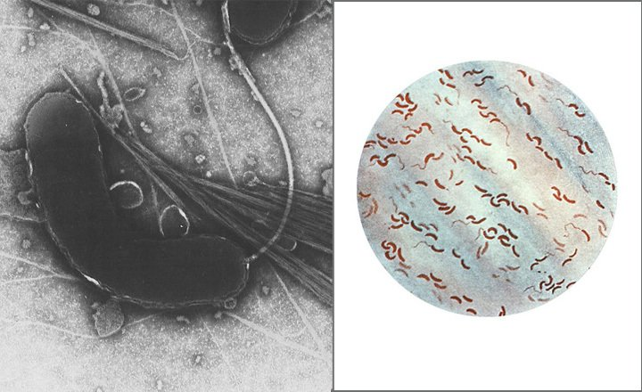

-це гостра діарейним інфекція, що виникає при вживанні харчових продуктів або води, заражених бактерією Vibrio cholerae О1 або О139. Хвороба являє загрозу для здоров'я населення в усьому світі і є одним з основних показників низького рівня соціального розвитку.
Ванда Власенко Віталіївна 11м2